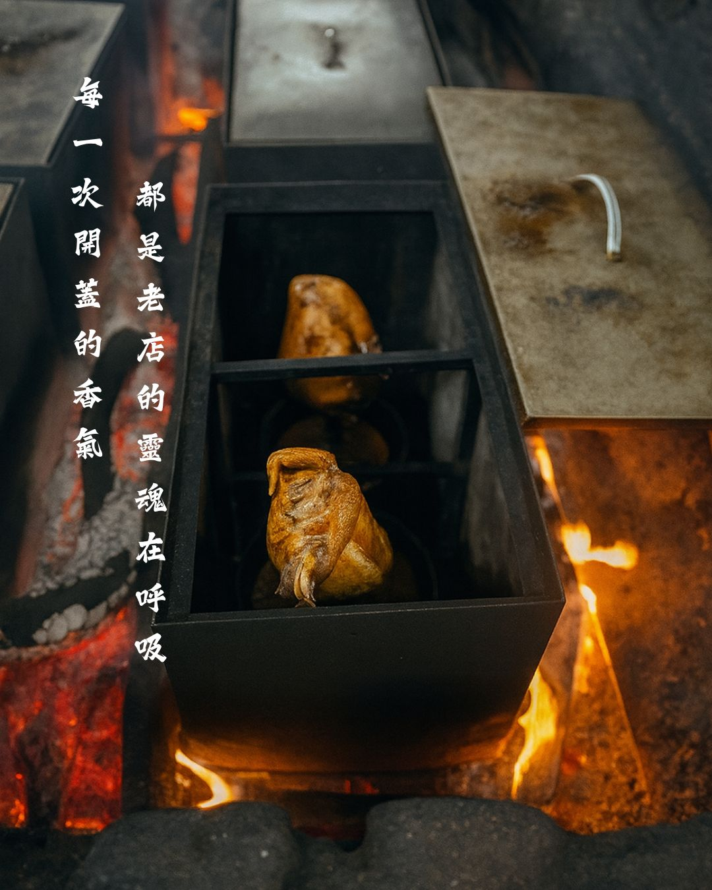
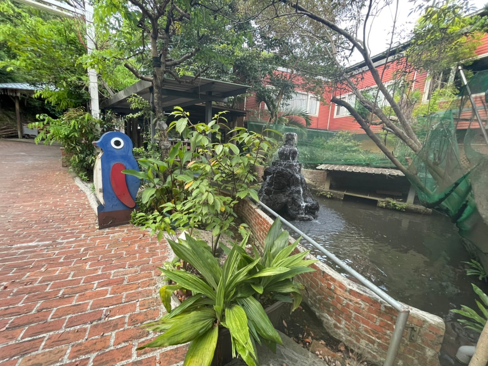

隱身於新竹九芎湖的青山綠水間，「劉家莊燜雞」點燃灶火，至今已走過二十多個年頭。我們深信，最好的味道來自對土地的敬意與時間的淬鍊。
因此，我們嚴選在地新鮮食材，依循客家先民的古法燜製手藝，將醇厚的傳統客家風味完美封存。從最初端上桌的那一盤金黃酥脆的燜雞，到無數個家庭在此舉杯歡聚的時刻，我們所傳遞的，早已超越了舌尖上的美味，而是一份猶如回到家鄉般的溫暖悸動。
歲月慢熬，二十年不變的在地溫暖
隱身於新竹九芎湖的青山綠水間，「劉家莊燜雞」點燃灶火，至今已走過二十多個年頭。我們深信，最好的味道來自對土地的敬意與時間的淬鍊。
因此，我們嚴選在地新鮮食材，依循客家先民的古法燜製手藝，將醇厚的傳統客家風味完美封存。從最初端上桌的那一盤金黃酥脆的燜雞，到無數個家庭在此舉杯歡聚的時刻，我們所傳遞的，早已超越了舌尖上的美味，而是一份猶如回到家鄉般的溫暖悸動。

「我們相信，美食從來都不只是味蕾的短暫享受，更是人與人之間最真摯的情感交流。
劉家莊希望帶給您的，不只是舌尖上的回味，更是每一次相聚時，滿溢的溫暖與珍貴回憶。」

